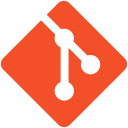

Projets / Parking
En cours
Plateforme de gestion d'un parking à barrière
Bases de données et réseaux
- Cours
- SAÉ Bases de données et Réseaux, L3 Informatique
- Année
- rendu fin novembre 2026
- Équipe
- En trinôme
- Statut
- En cours
 PostgreSQL
PostgreSQL- SQL
- PHP
 Java
Java- JDBC
 Python
Python- Sockets TCP

Git
Pas de dépôt public pour ce projet.
Le projet
Concevoir la plateforme de gestion d'un parking à barrière avec lecture de plaque : une base de données, un site web, un serveur applicatif et une borne qui communique avec lui.
Les fonctionnalités
- Base PostgreSQL. Les données du parking, modélisées avec la méthode MERISE.
- Site PHP. Tarifs, places libres, espace abonné, espace gérant, et paiement en ligne pour les visiteurs.
- Serveur Java. Serveur applicatif relié à la base en JDBC.
- Borne simulée en Python. Elle transmet la plaque lue au serveur par socket TCP, à l'entrée et à la sortie, et reçoit la réponse.
Architecture
Entrée et sortie d'un véhicule
Schéma de principe des échanges, avec le client à gauche et le serveur à droite. Le détail du protocole est dans le rapport du projet.
Mon rôle
Projet en trinôme, en cours.
La difficulté
Concevoir le protocole entre la borne et le serveur. Le prof voulait un exemple par cas (abonné, visiteur, erreurs) et un schéma clair client/serveur.
Ce que j'ai appris
J'ai appris à documenter des échanges réseau et à adapter le projet aux retours : le paiement des visiteurs est passé sur le site.